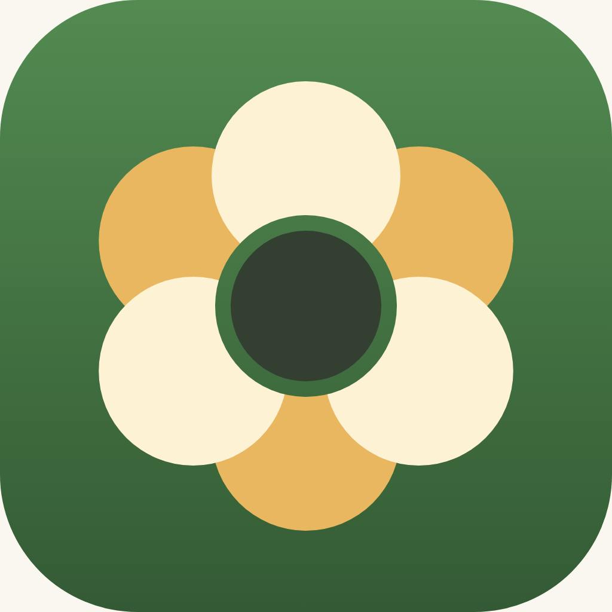
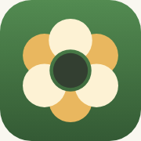
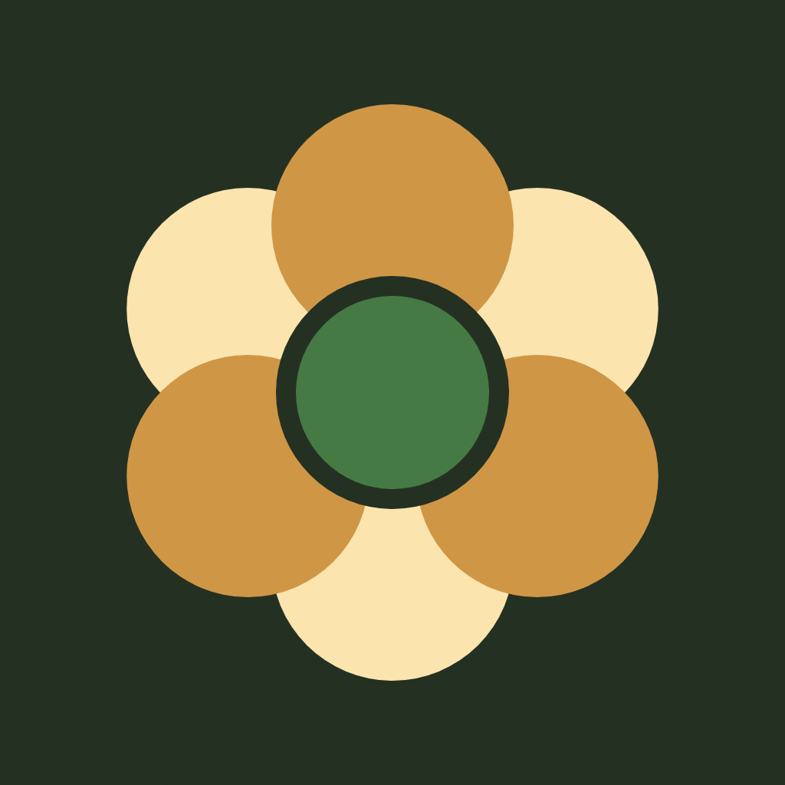
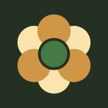
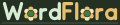
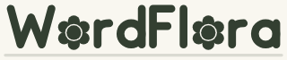
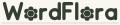

Home header: same size as WordmarkView(.title).

1024 (shown 180)
180
1024 (shown 180)
180The tinted icon is greyscale on black; iOS applies the user's tint to its luminance. The PNGs include the rounded corners drawn in the SVG; the shipping asset would be a full-bleed square.


